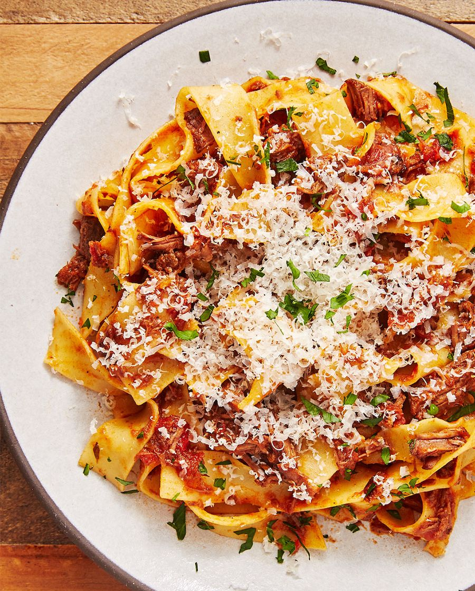

Beef Ragu

A hearty pasta dish that fills you up
Beef Ragu is a low and slow dish that takes awhile to create, but is well worth the reward. The meat is
absolutely melt in your mouth and layered with flavors.
Ingredients
- 2 tbsp. extra-virgin olive oil, divided
- 2 lb. chuck roast, cut into 2" cubes
- Kosher salt
- Freshly ground black pepper
- 1 medium yellow onion, chopped
- 5 cloves garlic, thinly sliced
- 1/2 tsp. fennel seeds
- 1/4 tsp. red pepper flakes
- 2 tbsp. tomato paste
- 1/4 c. red wine
- 1 (28 oz.) can whole peeled tomatoes
- 1/4 c. water
- 3 sprigs thyme
- 1 bay leaf
- 2 tsp. balsamic vinegar
- Parmesan, for serving
- Freshly chopped parsley, for serving
Steps
-
In a large stock pot over medium heat, heat 1 tablespoon oil. Season chuck roast with salt and pepper
and sear, in batches if needed, until browned on all sides, 10 minutes. Remove into a large bowl.
-
Heat remaining oil, still over medium heat. Add onion and cook until soft, 6 minutes. Add garlic,
fennel seeds, and red pepper flakes and cook until fragrant, 1 minute more.
-
Add tomato paste and cook until it is darkened in color, 1 to 2 minutes more. Deglaze pot with wine,
scraping any brown bits up at the bottom of your pot with a wooden spoon.
-
Add whole peeled tomatoes, water, thyme, bay lear, balsamic vinegar, and seared pot roast and season
with salt and pepper. Stir to combine and reduce heat to low. Cover and simmer, stirring occasionally,
until meat easily shreds, 2 to 2 1/2 hours. Use wooden spoon to break up tomatoes and meat, and remove
bay leaf. Serve over your faborite pasta or polenta. Top with parmesan and parsley before serving.